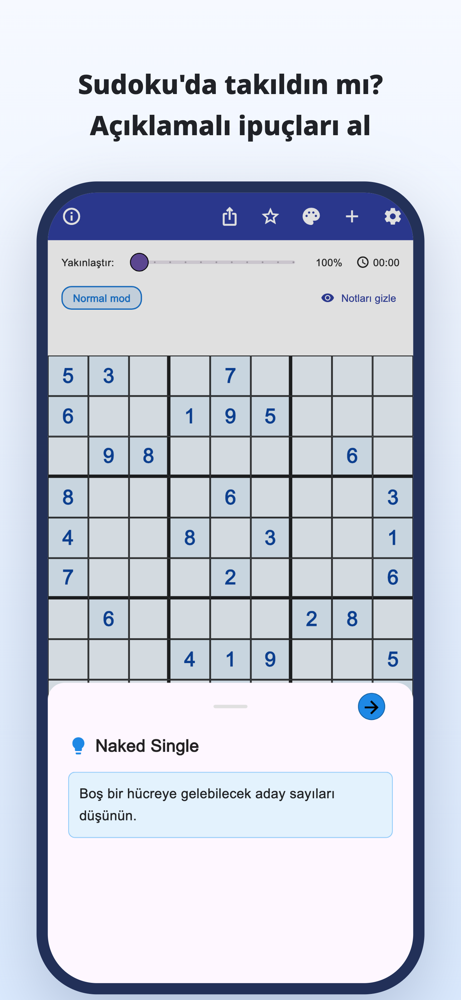
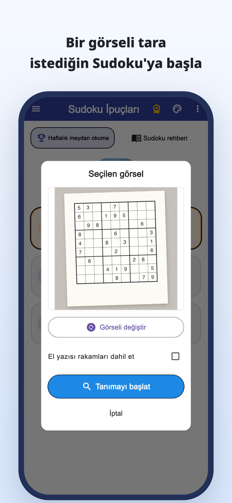
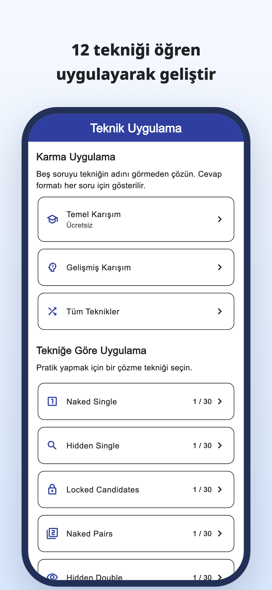
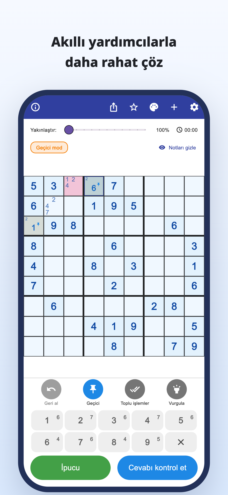
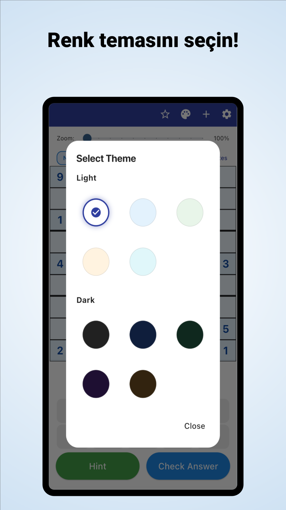

“Şimdi nereye bakmalıyım?”
Tabloyu tekrar tekrar inceliyorsunuz,
ama aynı yerde takılı kalıyorsunuz.
Kamerayla tara · Açıklamalı ipuçları
Gazete ve dergilerdeki bulmacaları tarayın.
Bir rakamın neden uyduğunu anlayın, sonra kendiniz çözmeye devam edin.
iPhone ve Android / Ücretsiz indirme · Uygulama içi satın alımlar





Oynarken bunlar oluyor mu?
Tabloyu tekrar tekrar inceliyorsunuz,
ama aynı yerde takılı kalıyorsunuz.
O rakam neden oraya geliyor?
Çözümü kopyalamak yeterli değil.
Çözdüğünüz kâğıt bulmacayı alıp
uygulamada devam etmek istiyorsunuz.
Takıldığınız yeri bir ipucuna dönüştürün
Gazete veya dergideki sudokuyu fotoğraftan okuyun ve rakamları tek tek girme işini azaltın.
Görselden okumaBir hamlenin gerekçesini okuyup yalnızca cevabı doldurmak yerine sonraki adımınızı düşünmek için kullanın.
Açıklamalı ipuçlarıTekniklere özel açıklama ve alıştırmaları keşfedin, sonra bu teknikleri kendiniz fark etmeyi çalışın.
Teknik alıştırmalarıKendi çözümünü bulmaktan hoşlananlar için
Alıştığınız bulmacayı içe aktarın ve kaldığınız yerden devam edin.
Takıldığınız yerin nedenini anlayın ve kendiniz ilerleyin.
Yeni başlayanlar ve başka bir teknik öğrenmek isteyenler için.
Oku · Dene · Alıştırma yap
Tarayıcınızda başlayın.
Bir rehber okuyun veya tam bir bulmaca oynayın.
Aday notlarından teknik açıklamalarına ve alıştırmalara.
Gerektiğinde ipucu alarak bulmacanın tamamını çözmeyi deneyin.
Kuralları ve ipuçlarını birleştirmenin keyfini keşfedin.
Mavi çerçeveli hücreye bakın ve ipucunu açın.
Sonraki hamle için ipucu
Boş bir hücrenin adaylarını kontrol edin.
Bu web örneği tek bir hamleyi denemenizi sağlar. Uygulamanın görünümü farklıdır.
Sudokuda takıldığınızda.
Sudoku İpuçları uygulamasını indirin
Ücretsiz indirme · Uygulama içi satın alımlar
Uygulama ücretsiz indirilip denenebilir. İpuçları, cevap kontrolleri ve görsel taramanın kullanım sınırları vardır; bazı kullanımlar video reklam izlemeyi gerektirir.
Premium aylık veya yıllık aboneliktir. Reklamları kaldırır, sınırsız ipucu ve cevap kontrolü sağlar. Görsel tarama Premium’da da sınırlıdır. Fiyat ve koşulları uygulamada görebilirsiniz.
Sudokunun fotoğrafını içe aktarın. Başlamadan önce tanınan rakamları kontrol edip hataları düzeltin. Standart 9×9 sudokular desteklenir.
Uygulamadaki bulmacaları oynayabilir, teknik açıklamaları ve alıştırmaları kullanabilirsiniz. Bazı bulmaca ve alıştırmalar Premium gerektirir.
Bu tek hamlelik demoya ek olarak tarayıcıda tam bir bulmaca oynayabilir, teknik rehberlerini ve alıştırmaları inceleyebilirsiniz.
Sudoku rehberi